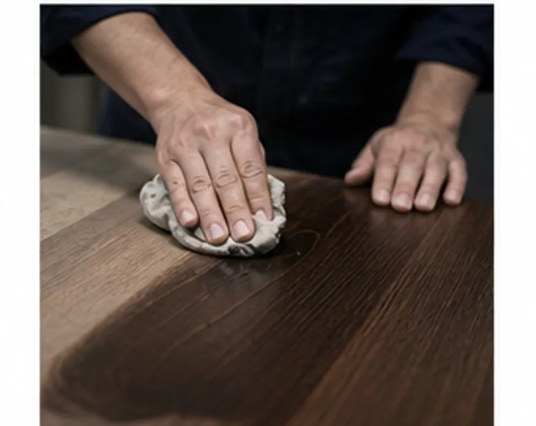
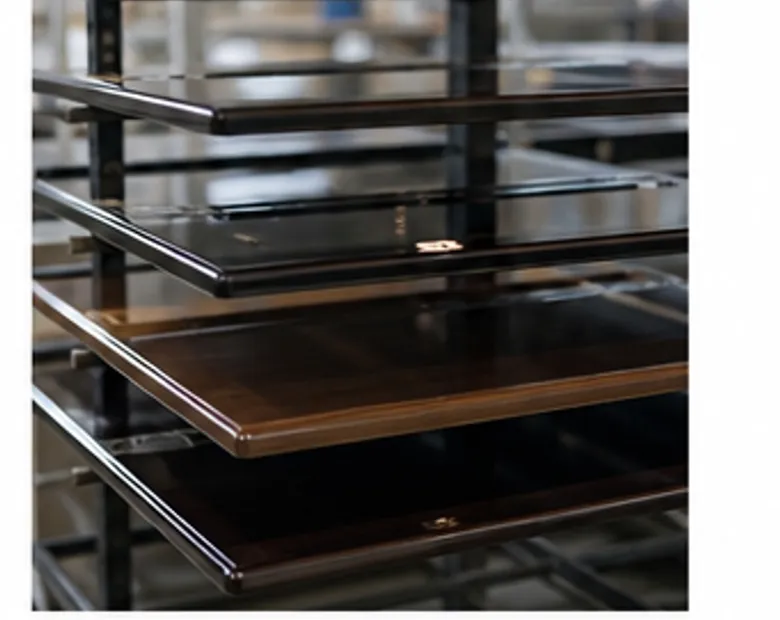
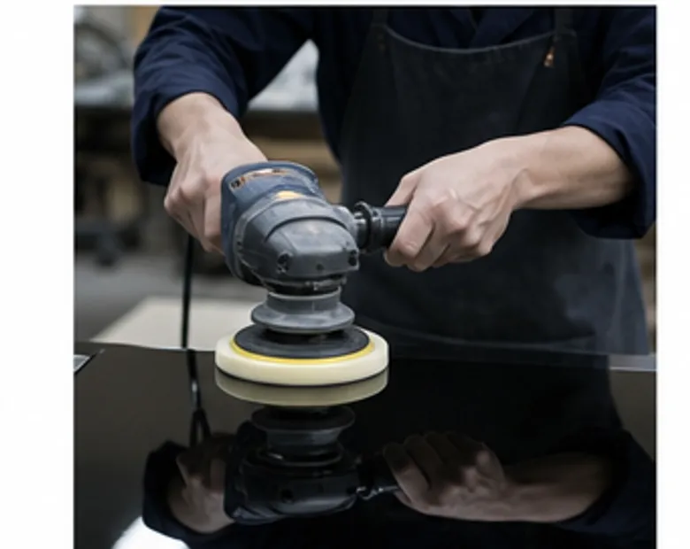
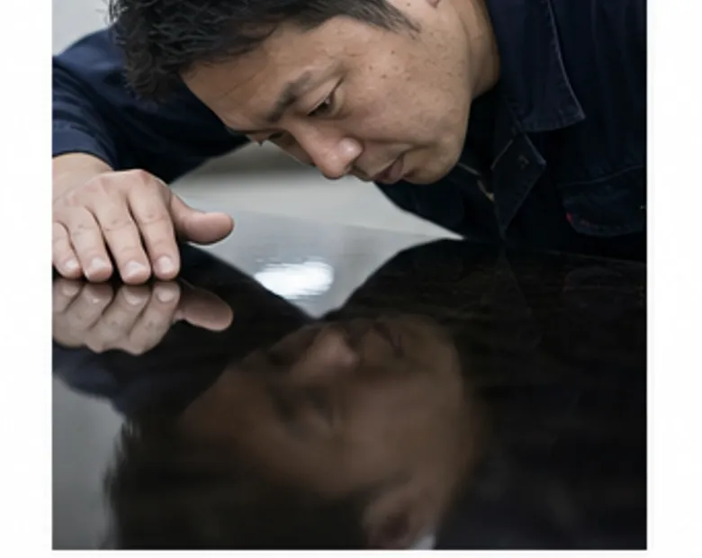

01集合住宅
集合住宅のエントランス造作
屋外に近い場所なので、紫外線で色が変わりにくい塗料を選びました。格子の小口まで同じ艶にそろえるため、組む前の部材の段階で塗っています。
- 樹種
- スギ集成材
- 仕上げ
- クリア 3分艶
- 数量
- 格子材 約260本

02飲食店
飲食店のカウンター天板
グラスの水滴や熱い器が置かれる場所です。木の質感を残しつつ、輪じみが残らない膜の厚さを見本で何度も確かめました。
- 樹種
- ウォールナット無垢
- 仕上げ
- 着色＋ウレタン 5分艶
- 数量
- 天板 1枚（長さ5,200mm）

03個人邸
個人邸の書斎の壁面収納
既存の床材に色を合わせました。扉34枚の色の差が出ないよう、基準板と1枚ずつ並べて検品しています。
- 樹種
- ナラ突板
- 仕上げ
- 着色＋ウレタン 7分艶
- 数量
- 扉 34枚

04ギャラリー
ギャラリーの可動什器
展示作品の邪魔をしない、少しだけ温かみのあるグレーを調色。動かしたときの擦れに強い仕上げにしています。
- 樹種
- シナ合板
- 仕上げ
- 塗りつぶし 艶消し
- 数量
- 什器 18台

05オフィス
オフィスのエントランスサイン
来訪者が最初に目にする面です。塗りと研ぎを重ね、最後はバフで磨いて、照明がゆがまずに映り込む面に仕上げました。
- 樹種
- MDF
- 仕上げ
- 黒の鏡面仕上げ
- 数量
- サイン板 1枚

06ホテル
ホテル客室のライティングデスク
客室ごとに艶の差が出ないよう、ロットを3回に分けて塗り、毎回同じ基準板で確認しました。
- 樹種
- タモ無垢
- 仕上げ
- クリア 艶消し
- 数量
- デスク 42台
掲載しているのは一部です。物件名やお客さまの名前は伏せています。
CONTACT
面のことなら、まず相談を。
図面の段階からご一緒できます。